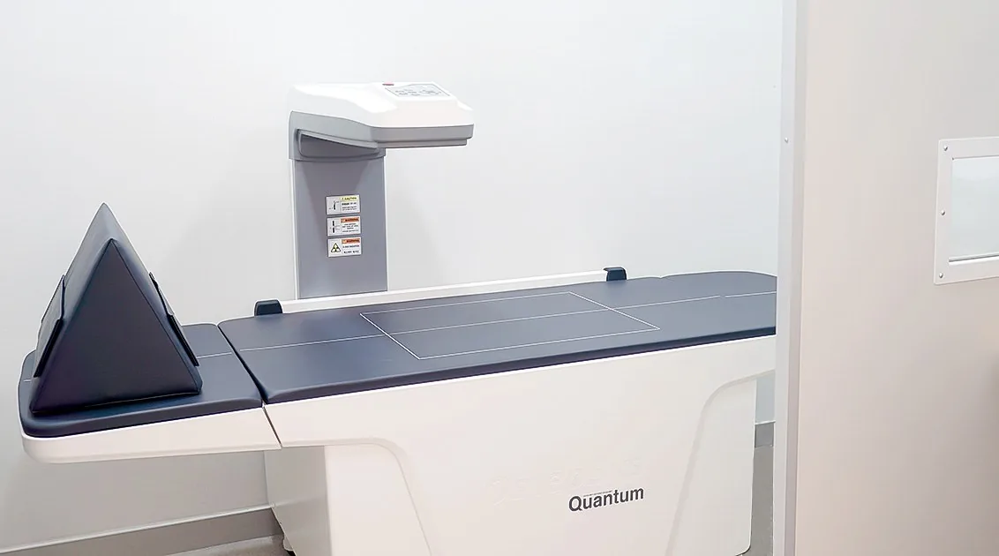

안양MRI검사, X-ray·초음파·골밀도검사와 보는 것이 다른 이유

X-ray는 뼈와 정렬, 초음파는 힘줄·인대·관절액, MRI는 디스크·신경·연골, 골밀도검사는 뼈의 밀도를 봅니다. 어떤 증상에 어떤 검사를 검토하는지와 중복 검사를 줄이는 방법을 정리했습니다.
검사마다 보는 것이 다릅니다
X-ray는 뼈의 골절·변형·정렬과 관절 간격을 보는 기본 검사이고, 초음파는 힘줄·인대·활액막·관절액처럼 움직이는 연부조직을 실시간으로 봅니다. MRI는 디스크·신경·연골·인대 같은 깊은 연부조직을 자세히 보며, 골밀도검사(BMD)는 뼈의 밀도를 재어 골다공증을 진단합니다. 적외선체열검사(DITI)는 통증 부위의 체열 분포를 보는 보조 검사입니다.
증상에 맞게 고릅니다
진찰에서 뼈 문제가 의심되면 X-ray, 힘줄·인대·물이 찬 정도는 초음파, 신경 증상이나 연골·디스크 손상이 의심되면 MRI를 검토합니다. 골다공증 위험 요인이 있거나 압박골절이 의심되면 골밀도검사를 함께 합니다. 공개 자료에 따르면 시대병원 3층 검사실에 이 장비들이 안내되어 있습니다.
중복 검사를 줄이려면
다른 병원에서 찍은 영상의 CD와 판독지를 가져오면 재촬영 필요 여부를 진찰에서 판단할 수 있습니다. 촬영 시점과 부위, 화질에 따라 다시 찍어야 하는 경우도 있으니 가져온 뒤 확인하세요.
상담 전 확인할 내용
- 증상과 의심되는 부위, 다친 이력
- 다른 병원 검사 이력과 영상 CD·판독지
- 골다공증 위험 요인(폐경·고령·골절 이력·스테로이드)
위험과 주의사항
MRI 자체는 방사선 노출이 없지만 체내 금속·전자기기가 있으면 위험할 수 있어 사전 확인이 필수입니다. 조영제는 알레르기·신장 관련 부작용이 있을 수 있습니다. 수술에는 마취 관련 위험, 감염, 출혈, 혈전, 신경 손상 등이 따르며 개인별로 설명받아야 합니다.
본 글은 진료 준비를 위한 일반 정보입니다. 진단과 치료 방법, 수술 필요 여부와 회복 기간은 의료진의 진찰과 검사를 통해 확인하세요.
안양MRI검사 치료 안내와 주의사항 더 보기 ↗카테고리 정밀검사·입원·수술